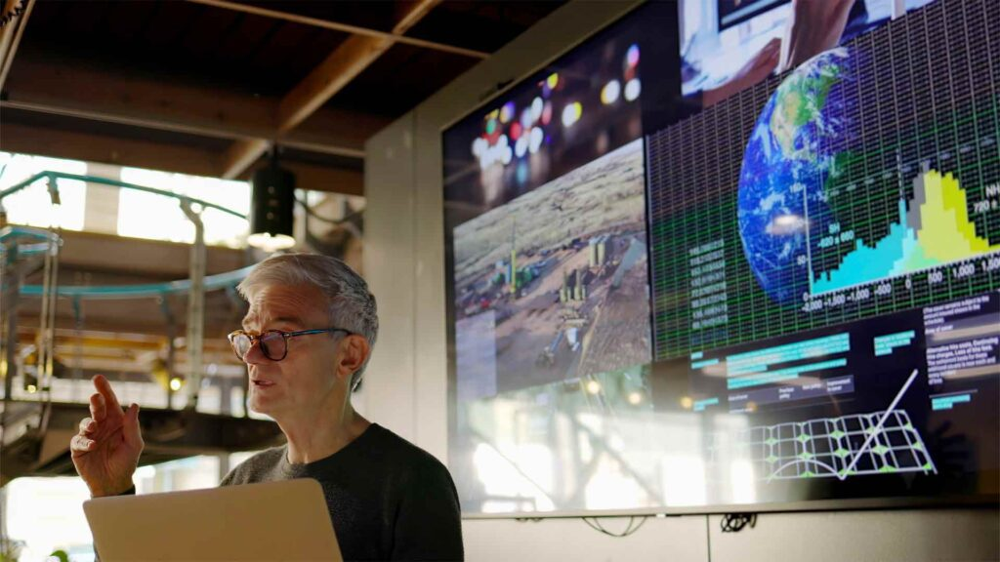

Research
AID Action Alliance (AAA)
Multi-institutional research on Data Science & AI for global and societal challenges
The AAA is an International, Multi-institutional Alliance focusing on undertaking world-leading multi-disciplinary research on Data Science & AI for Global and Societal Challenges. It is focused on sustainability and other challenges, as per UKRI, Horizon Europe and UN SDGs. AAA was established back in 2024.
Constant development of people
A leading element of the AAA strategy is about a “constant development of people”. We are a dedicated team of experts with a “prevailing culture approach” in continuously advancing our research capacity i.e. skills, expertise and our competency so we can respond and make a credible impact in challenges related to the global & societal contexts.
Our research structure is geared towards the provision of diversified activity including the additionality in guiding and prompting directions for the constant improvement of a conducive environment to support us undertake and deliver world-leading research (postgraduate students, researchers, research active support academic or research administrators). Our approach to collaborative research recognises the value and the significance in inclusivity and thus, working together with various organisations including academia, community user groups, industry etc.
In 2025, AAA has launched the:

Aid Action Alliance (AAA)
“Together. Together we can build bridges across and beyond academia; we can achieve more and make greater impact than we could do alone.”
AAA stands for AID Action Alliance. AID stands for Adding to the strategic direction of each partner, by Improving their environment for Developing people to support, undertake and deliver impactful and world-leading research in the thematic area.
The AAA has emerged following the evolution of the Edge Hill University Data Science STEM research centre (2018–2025). It builds on the success of the EHU Computing UoA REF2021 submission that ranked as the most improved UoA nationally (UK). It recognises the significant value of national and international collaboration, and the need for developing people and their environment to keep improving their capacity for supporting, undertaking and delivering world-leading research and impact.
Aim
To undertake and deliver world-leading research on Data Science & AI and demonstrate its societal impact in the thematic area of Global & Societal Challenges.
Vision
To blend core expertise on Data Science & AI beyond AAA and develop capacity to the extent, of doing more & better research on Global & Societal Challenges, knowledge exchange & transfer, and with greater impact on society.
Research themes
- Autonomous Systems, Robotics, Automation, Multi-agents
- Re-configurable IoT and Systems, Self-healing, Smart Systems
- Data Science and Complex Systems, Dashboards and Visualisers
- Intelligent Visual Computing, Surveillance, Disaster Management
- Environmental Disaster Management, Risk Reduction and Education
- Artificial Intelligence and (Distributed) Data Services Innovation
- Behavioural Analysis, Biosciences, Agriculture, Energy, Governance, Resilience
- Cyber Security, Cyber Policy, Risk Policies and Secure Societies
- Ageing, Memory, Mobility, Health, Neurodiversity, Mental Health & Chronic Condition Detection and Prevention
- Business Continuity, Digital Transformation and Sustainability
- Viability of Digital and Creative Industries in Rural/Remote Areas
AAA is seeking funded research from British Academy, Leverhulme Trust, Horizon Europe, UKRI (including Innovate UK) and other local network councils and organisations. Example calls of outmost relevance include Industrial Strategy UK, UKRI’s tackling health inequalities, understanding social and economic issues, and improving policymaking. Corresponding Horizon Europe calls include Marie Skłodowska-Curie Actions, Pathfinder, Cluster 2: “Culture, creativity and inclusive society” and Cluster 3: “Civil security for society”.
AAA is an ambassador and proud for having inaugural partnerships and exclusivity with Business Connect (Innovate UK) and the UK Reproducibility Network. AAA recognises and celebrates EDI values and other professional initiatives.
Università della Calabria (iDEA Lab) (IT)
Unviersità degli Studi di Salerno (HABES Lab) (IT)
Durham University (SwaCI Lab) (UK)
Euro Academy of Active Learning (GR)
HES-SO Valais–Wallis (ConEx Lab) (CH)
Innovate UK / Business Connect (UK)
Kauno technologijos universitetas / Kaunas University of Technology (LT)
Libelium Lab (ES)
Ulster University (UK)
UK Reproducibility Network (UKRN) (UK)
Warestack Ltd (UK/USA/GR)
- Professor Alfredo Cuzzocrea, Università della Calabria, Italy
- Dr Antonio Jara, Libelium Lab, Spain
- Professor Christian Esposito, Università degli Studi di Salerno, Italy
- Dr Dawn Geatches, Business Connect / Innovate UK, UK
- Dr Eleana Asimakopoulou, Euro Academy of Active Learning, Greece
- Professor Farshad Arvin, Durham University, UK
- Professor George Talbot, Edge Hill University, UK
- Professor Kevin Curran, Ulster University, UK
- Professor Nik Bessis, Project Lead (Chair), Edge Hill University, UK
- Dr Philippa Holloway, Edge Hill University, UK
- Dr Rebecca Monk, Edge Hill University, UK
- Dr Stelios Sotiriadis, Warestack Inc., USA
- Additional members as per the original page.
AAA Multi-institutional Research Institute on Data Science & AI for Global and Societal Challenges
“Together. Together we can build bridges across and beyond academia; we can achieve more and make greater impact than we could do alone.”
Research on Global and Societal Challenges is complex and requires a collaborative approach that brings together both soft and technical expertise. Our strength stems from an excellent critical mass of individual experts and expert teams from 13 organisations world-wide.
The research institute aligns with strategic goals and responds to challenges in which UKRI, Horizon Europe and UN SDGs refer to. AAA’s research institute has been established in 2025.
Aim
To undertake and deliver world-leading research on Data Science & AI and demonstrate its societal impact in the thematic area of Global & Societal Challenges.
Vision
To blend core expertise on Data Science & AI beyond AAA and develop capacity to the extent, of doing more & better research on Global & Societal Challenges, knowledge exchange & transfer, and with greater impact on society.
Research themes
- Autonomous Systems, Robotics, Automation, Multi-agents
- Re-configurable IoT and Systems, Self-healing, Smart Systems
- Data Science and Complex Systems, Dashboards and Visualisers
- Intelligent Visual Computing, Surveillance, Disaster Management
- Environmental Disaster Management, Risk Reduction and Education
- Artificial Intelligence and (Distributed) Data Services Innovation
- Behavioural Analysis, Biosciences, Agriculture, Energy, Governance, Resilience
- Cyber Security, Cyber Policy, Risk Policies and Secure Societies
- Ageing, Memory, Mobility, Health, Neurodiversity, Mental Health & Chronic Condition Detection and Prevention
- Business Continuity, Digital Transformation and Sustainability
- Viability of Digital and Creative Industries in Rural/Remote Areas
We are undertaking expert data science and AI research on the following global and societal challenges
- Surveillance, Environmental Management, Disaster Management
- Ageing, Health Inequalities, Mental Health & Disorder Detection and Prevention
- Digital Transformation and Sustainability
- Creative Industries in Remote Areas
- Culture, Creativity and Inclusive Society
- Civil Security for Society
- Behavioural Analysis, Social-economic Issues, Risk and Policy Making
AAA is seeking funded research from British Academy, Leverhulme Trust, Horizon Europe, UKRI (including Innovate UK) and other local network councils and organisations. Example calls of outmost relevance include Industrial Strategy UK, UKRI’s tackling health inequalities, understanding social and economic issues, and improving policymaking. Corresponding Horizon Europe calls include Marie Skłodowska-Curie Actions, Pathfinder, Cluster 2: “Culture, creativity and inclusive society” and Cluster 3: “Civil security for society”.
- Data Science & AI, Edge Hill University (UK)
- Data & Complex Systems, Edge Hill University (UK)
- Health Research Institute, Edge Hill University (UK)
- Productivity & Innovation Centre, Edge Hill University (UK)
- iDEA Lab, Università della Calabria (IT)
- SwaCI Lab, Durham University (UK)
- Euro Academy of Active Learning (GR)
- ConEx Lab (CH)
- Warestack (US)
- Professor Nik Bessis, Director (EHU, UK)
- Dr Philippa Holloway (EHU, UK)
- Dr Leon Culbertson (EHU, UK)
- Professor Alfredo Cuzzocrea (iDEA Lab, IT)
- Professor Farshad Arvin (SwaCI Lab, UK)
- Dr Eleana Asimakopoulou (GR)
- Dr Dawn Geatches (Innovate UK, UK)
- Dr Antonio Jara (Libelium Lab, ES)
- Professor Kevin Curran (Ulster University, UK)
AID Action Edge Hill University (AA EHU)
The International Research Centre on Data Science & AI for Global and Societal Challenges
The AA EHU is an International Research Centre and the leading partner of the Multi-institutional AID Action Alliance (AAA). Its thematic area resides at the intersection of Data Science and AI for Global & Societal Challenges.
AA EHU has established a cross-subject research activity integrating expertise from several subjects including biosciences, computer science, geosciences, psychology, sports, health and law.
Aim
To undertake and deliver world-leading research and societal impact in the intersection of Data Science and AI for Global & Societal Challenges.
Vision
To blend core expertise available from computer science, biosciences, psychology, geosciences, sports, health, education, business and law to develop capacity to do more & better research on Global & Societal Challenges, knowledge exchange & transfer, and with greater impact on society.
Research themes
- Autonomous Systems, Robotics, Automation, Multi-agents
- Re-configurable IoT and Systems, Self-healing, Smart Systems
- Data Science and Complex Systems, Dashboards and Visualisers
- Intelligent Visual Computing, Surveillance, Disaster Management
- Environmental Disaster Management, Risk Reduction and Education
- Artificial Intelligence and (Distributed) Data Services Innovation
- Behavioural Analysis, Biosciences, Agriculture, Energy, Governance, Resilience
- Cyber Security, Cyber Policy, Risk Policies and Secure Societies
- Ageing, Mobility, Health, Mental Health & Disorder Detection and Prevention
- Business Continuity, Digital Transformation and Sustainability
- Viability of Digital and Creative Industries in Rural/Remote Areas
- Industrial Strategy UK
- Professor George Talbot (ex-officio)
- Professor Nik Bessis, Project Lead (Chair)
- Dr Philippa Holloway
- Dr Eleana Asimakopoulou (eAAL, Greece)
- Michael Banford
- Judith Carr
- Dr Dawn Geatches (Business Connect, UK)
- Other members as per original page.
- Professor Nik Bessis
- Dr Eleana Asimakopoulou
- Professor Ardhendu Behera
- Professor Yannis Korkontzelos
- Professor Yonghuai Liu
- Dr Jo-Anne Puddephatt
- Additional expert leads listed on the original page.
Research projects
View a list of selected funded projects
| Start date to end date | Project |
|---|---|
| 2025 – 2028 | National Institute for Health and Care Research £249,804 — Dr Puddephatt, Jo-Anne (Co-I) |
| 2025 – 2026 | TRAPCAT: Transformative AI Research for Personalised Cancer Treatment £79,900 — funded from British Council |
| 2025 – 2026 | Sarcoma UK £59,985 |
| 2024 – 2025 | Trustworthy Search and Rescue uncrewed aerial vehicle (TSAR), MSCA Postdoctoral Fellowship £200,000 — funded from EU programme |
| 2024 – 2025 | Trustworthy Search and Rescue uncrewed aerial vehicle (HORIZON TMA), MSCA Postdoctoral Fellowship £200,000 — funded from EU programme |
| 2024 | ARMOUR: Developing AI Tools and Processes for Improved Intelligence and Autonomy in Disaster Resilience £10,000 — funded from British Academy |
| 2022 – 2025 | Synergy Ltd, KTP £190,000 — funded from Innovate UK |
| 2022 – 2023 | Going Global Partnership Programme, INTERLINKS II (UK–Kazakhstan) £10,000 — funded from Innovate British Council |
| 2018 – 2019 | Vehicular Resilience £12,500 — Honda R&D Europe (UK) |
| 2018 – 2021 | TYPHON, ICT-10-2017 RIA €470,000 — funded from EU, H2020 |
| 2017 – 2019 | CROSSMINER, ICT-10-2016 RIA €462,000 — funded from EU, H2020 |
Research outputs
Contact us
Static demo form. Connect it to your backend (PHP/Node/serverless) to actually send messages.